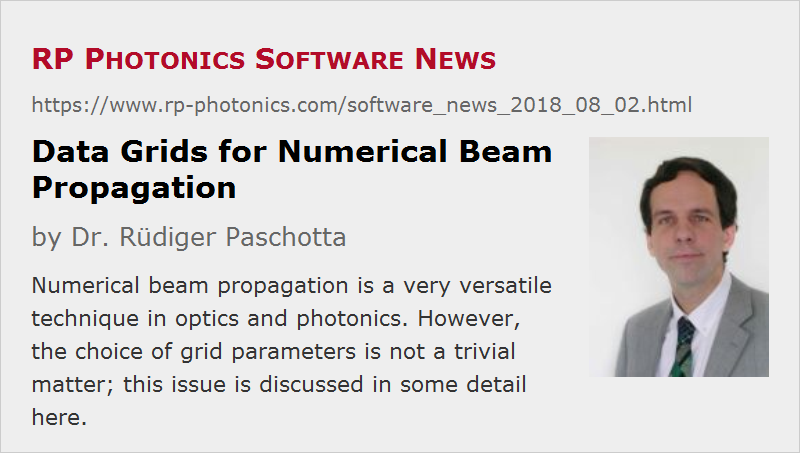

Data Grids for Numerical Beam Propagation
Posted on 2018-08-02 in the RP Photonics Software News (available as e-mail newsletter!)
Permanent link: https://www.rp-photonics.com/software_news_2018_08_02.html
Author: Dr. Rüdiger Paschotta, RP Photonics Consulting GmbH
Abstract: Numerical beam propagation is a very versatile technique in optics and photonics. However, the choice of grid parameters is not a trivial matter; this issue is discussed in some detail here.

For simulations in the area of optics and photonics (e.g. with our software RP Fiber Power), one often applies numerical beam propagation techniques. Compared with a mode-based approach, that has the advantage that beam propagation can be done even in the most complicated situations, where it would be hard to calculate the propagation modes – for example due to their huge number (making that approach inefficient) or because the properties of the medium change in the longitudinal direction.
For numerical beam propagation, we need to represent the optical field(s) with complex amplitudes on some discrete numerical grid. The question arises what an appropriate choice of grid size is, including the grid spacing in the longitudinal and transverse directions.
Required Extension of the Grid
Obviously, the grid should span the whole volume in which we expect significant optical fields. For an optical fiber, for example, we should at least cover a volume somewhat extending beyond the fiber core and of course over the full length of fiber. If we want to study not only guided modes, but also cladding modes, we need to cover not only the area of the core, but that of the full cladding – which may be much larger. For a given grid spacing (see below), that can lead to a very large number of points and eventually to excessive memory and CPU time requirements; we may hit some intrinsic limitations of the method, at least if we need to treat a relatively long piece of fiber.
Note also that typically any fields reaching an edge of the numerical grid will be reflected there – whether that is physically realistic or not. Even weak reflections can lead to pronounced artificial interference effects and should therefore be avoided. One method for that is to include an artificial absorber near the edges. One might think that one needs only very few grid points for that if the absorption is made very strong. However, a too rapid increase of that absorption can also cause parasitic reflections. Therefore, one may require a substantial number of grid points for that absorbing region.
There are cases where some light can get into the fiber cladding (e.g. due to strong bending of the fiber), but ultimately we are interested only in the light remaining in the fiber core. We may then use a numerical grid which does not cover much more than the fiber core and contains some artificial absorption which kills all non-guided modes. Of course, that absorption should grow only somewhat outside the core, such that it does not attenuate the guided modes, which can also somewhat extend into the cladding.
Transverse Grid Resolution
The transverse grid resolution should of course be fine enough to allow for a proper sampling of the intensity profiles. Not only the optical intensity, but also the optical phase should not change too much from one grid point to the next one. Therefore, for example a strongly diverging beam requires a finer transverse grid resolution.
On the other hand, for a reasonable numerical accuracy it is often not necessary that you have a large number of grid points within one beam diameter. I have sometimes been surprised to see that one can get fairly good results even with a grid which looks rather coarse – one can still use interpolated amplitudes for diagrams, for example.
Considering a plane wave with a certain wavelength and angle θ against the fiber axis, we have a transverse wave vector component sin θ · 2 π / λ. For a transverse grid resolution δx, that implies a phase change of sin θ · 2 π δx / λ between two grid points. For a reasonable accuracy, that should be kept well below 1 rad.
If we have an optical fiber with a certain numerical aperture, we can calculate the maximum beam angle (e.g. in air) and from that the required grid resolution. We find that high-NA fibers require finer grids and thus more memory and computation time than low-NA fibers.
In a script-based software like RP Fiber Power, one can of course easily have an automatic calculation of the grid parameters based on properties of the fiber and possibly some input beam.
Longitudinal Grid Resolution
Concerning the longitudinal grid resolution, we can again apply the rule that there should be no strong changes of field amplitudes within one grid point spacing – but that simple rule is not always sufficient. For example, light in a particular fiber mode will not expand at all during propagation, but that does of course not mean that you can use an arbitrarily large grid spacing. One can refine the mentioned rule by applying it separately to each physical effect acting on the propagating light – for example the effects of the inhomogeneous refractive index distribution and the beam divergence. For the latter, you may simply calculate the Rayleigh length from the fundamental mode radius; that tells you on which length scale the beam divergence will have substantial effects.
In free-space propagation – or for propagation in an optically homogeneous medium – one may actually use very large longitudinal steps, assuming that the software is based on a Fourier method. This is because essentially the software decomposes the field into plane waves, and for each of those it knows exactly how they propagate over large distances.
Unfortunately, applications with free-space propagation can have their own numerical challenges. For example, you may need a very large grid for each plane if the beam can reach a large transverse extension at some points, and at the same time you need a very small transverse grid spacing e.g. if the beam is somewhere focused to a small spot – or even if it is just strongly divergent or convergent at some point. In such a situation, you end up using very large grids.
Sharp Refractive Index Steps are Problematic
A substantially improved transverse grid resolution is required if you have a refractive index profile which has sharp steps – as in the typical case of a step-index fiber. That may sometimes substantially increase the memory and computation time requirements. However, the problem can often be substantially mitigated by somewhat smoothening the refractive index transition. Note that this may even be more realistic: a a real fiber does not exhibit a perfectly sharp index step because some diffusion of substances occurs during the fiber fabrication. Anyway, the true propagation results will normally not depend much on such details, although the numerical accuracy gets better with some smoothening.
You can introduce smoothening e.g. by using a super-gaussian index profile (with a relatively high order) instead of a step-index profile. Alternatively, our software supports the function bp_set_n_smooth(), where you apply some smoothening after the calculation of refractive index values based on the original inputs.
How to Know Whether the Grid Resolution is Sufficient?
As explained above, there are various useful rules for determining upper limits for the grid spacing in longitudinal and transverse directions. However, they do not always lead to completely reliable results.
In case of doubt, it is always a good idea to check whether the obtained results change substantially e.g. with a two times finer grid resolution in transverse and/or longitudinal direction, or with a larger extension of the grid.
Conclusions
You see that the choice of the numerical grid parameters is not a trivial matter. Depending on the modeled situation – and often also depending on what exactly you are interested in – you may have to apply different rules. It would be hard for a software to do all that automatically. Therefore, one requires some level of technical understanding to apply such beam propagation techniques – even if you don't have to implement the algorithm yourself. Obviously, that understanding is much easier to build up if you have a software like ours which comes with high-quality documentation and technical support. Further, in practice you can profit a lot from a flexible software, where you can e.g. have the grid parameters automatically calculated from your inputs. Then you can concentrate on the purpose of your simulation and get useful results quickly.
Advice from an experienced support person can also be vital in cases where you run into using huge numerical grids. Even in cases which look hopeless at a first glance, one can often find quite practical solutions, using certain non-obvious tricks.
This article is a posting of the RP Photonics Software News, authored by Dr. Rüdiger Paschotta. You may link to this page, because its location is permanent.
Note that you can also receive the articles in the form of a newsletter or with an RSS feed.
|  |
If you like this article, share it with your friends and colleagues, e.g. via social media:
These sharing buttons are implemented in a privacy-friendly way!